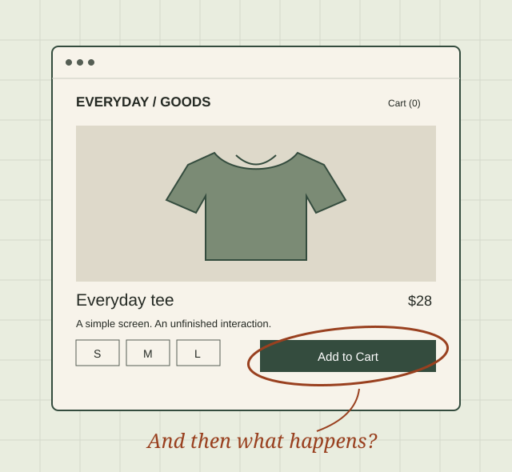
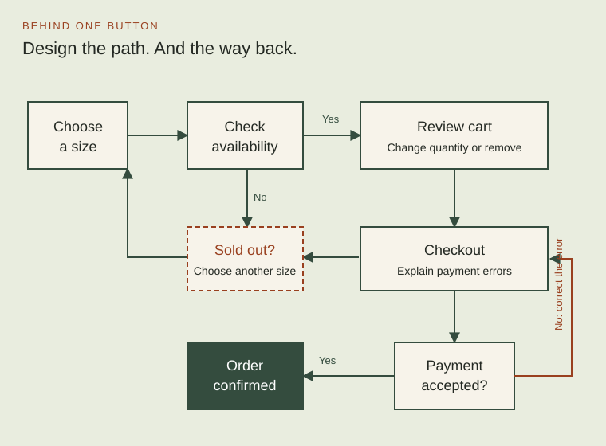

A closer look at generative AI in UI/UX
A screen is not
an experience.
AI can give you a polished interface in seconds. That does not tell you what happens when someone tries to use it.
Generative AI should assist—not replace—UI/UX prototyping. It can help us get started. Research, connected interactions, and testing help us decide what is worth building.
Look beyond the layout
01 / Where AI helps
Something to
react to.
Starting with a blank page can be difficult. An AI-generated layout gives a team something specific to discuss—even when the first version is not quite right.
Imagine asking AI for a local café website. It might produce a big photo gallery, a menu, and an ordering button. The draft could help the team notice that the menu is hard to find, or that customers need directions more than another photo of a latte.
That is useful. The first draft does not have to be the answer. It can help the team ask better questions.
In the GenUI study, participants used generative UI tools to explore concepts and communicate ideas. UX professionals in Chaudhry’s study also described benefits for inspiration and collaboration. [1] [2]
02 / Where the screen stops
What happens after “Add to Cart”?
A button can look finished before anyone has decided how it should behave.

One screen leaves a lot unanswered.
- What if the selected size is sold out?
- How does someone know the item was added?
- Can they change their order?
- What happens if payment fails?
An interactive prototype connects those steps so people can try the task, encounter problems, and find their way forward.
GenUI participants reported issues with consistency, editing, and connected user flows. Useful-looking screens did not always form a coherent experience. [1]
Try a small example
The button is the easy part.
Choose a size and add it to the sample cart. Try Large, too. The feedback and recovery steps are part of the design.
Illustrative demo only. No purchase or personal data.
The sample cart is empty.
03 / The human work
A prompt is not
a user interview.
You can ask AI to design an appointment-booking page for students. You can describe the layout and features. But that does not tell you whether students understand the appointment categories or know what to do when no times are available.
Those answers need to come from students—not assumptions about them.
Interviews, observations, and usability testing help a team understand people’s goals and where they get stuck. AI can suggest a layout. Designers still need to check whether it fits the audience.
UX professionals in Chaudhry’s study emphasized human oversight and raised concerns about generic output that misses a user’s context. These were self-reported views, not direct observations of every participant’s work. [2]
04 / Put it to the test
Looking usable is not the same as being usable.
Both versions needed work.
Kamnerddee and colleagues compared human-created and AI-generated fitness-app prototypes. The human-created version scored slightly higher for usability, but the difference was not statistically significant. Both scored below the usability benchmark of 68 discussed in the paper. [3]
That is not proof that humans always design better interfaces. It is a reason to test both.
Accessibility is part of the experience.
A mockup cannot confirm that a keyboard user can reach every function, or that a screen reader can identify a button. WCAG 2.2 addresses requirements such as these: [4]
- Keyboard accessCan someone use the functions without a mouse?
- ContrastIs text distinguishable from its background?
- Labels and instructionsIs it clear what each control does?
- Error identificationDoes the interface explain what went wrong?
05 / A fair point
Easier to begin.
Not ready to skip ahead.
Not everyone has access to a full UX team. For a student, small business, or nonprofit, AI can make it easier to turn an idea into something people can discuss. Faster early exploration is a meaningful benefit. [1]
The problem begins when a first draft is treated as a finished product. A polished layout should not become a reason to skip research, accessibility review, or testing.
AI can make design more available without making human-centered design optional.
The takeaway
Let AI help with the draft.
Keep people in the decisions.
Use it to explore possibilities. Then ask whether those possibilities work for the people who will actually use the product.
A generated screen can start the conversation. Research, prototyping, and testing help decide what comes next.
Read the researchBehind the argument
Sources & limitations
This page adapts my Project 01 research paper. The studies offer useful evidence, but they do not establish what every AI tool or design team will experience.
Chen, X. A., Knearem, T., & Li, Y. (2025). The GenUI study: Exploring the design of generative UI tools to support UX practitioners and beyond. Proceedings of the Designing Interactive Systems Conference (DIS ’25). ACM.
Read the GenUI studyScope: one company and one generative UI tool.
Chaudhry, B. M. (2024). Concerns and challenges of AI tools in the UI/UX design process: A cross-sectional survey. Extended Abstracts of the CHI Conference on Human Factors in Computing Systems (CHI EA ’24). ACM.
Read the UX professionals’ surveyScope: self-reported professional opinions, which may differ from practice.
Kamnerddee, C., Putjorn, P., & Intarasirisawat, J. (2024). AI-driven design thinking: A comparative study of human-created and AI-generated UI prototypes for mobile applications. 8th International Conference on Information Technology (InCIT). IEEE.
Read the prototype comparisonScope: 20 participants, most of whom were students.
World Wide Web Consortium. (2023). Web Content Accessibility Guidelines (WCAG) 2.2.
Read WCAG 2.2A web accessibility standard, not a study comparing AI and human design.
About the content and illustrations
The text is adapted from “Why Generative AI Should Assist, Not Replace, UI/UX Prototyping.” The two SVG illustrations were created for this webpage with AI assistance. They are explanatory examples, not screenshots of an AI tool or figures from the cited studies.
Project 01 disclosed using Claude for brainstorming, outlining, and help understanding sources. This webpage draft, code, and illustrations were created with Perplexity assistance. Review and revise this disclosure to reflect your actual work before submitting.